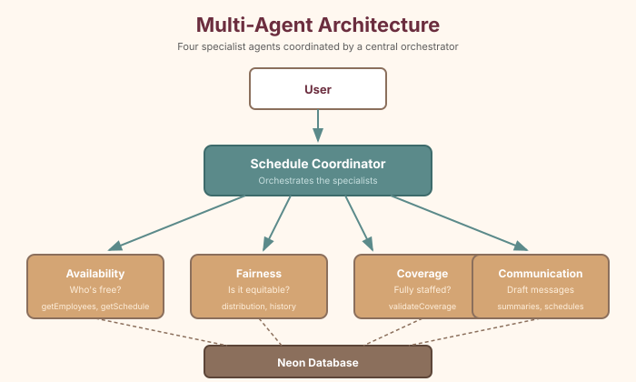

There's one more agent worth building: the Communication Agent. While the other three handle the thinking, this one handles the talking—drafting human-readable summaries and notifications.
Step 50: Create the Communication Agent
Create lib/tools/communication-tools.ts:
// lib/tools/communication-tools.ts
export const formatWeekSummaryTool = tool({
description: 'Generate a formatted summary of a week\'s schedule,
suitable for posting or sending to the team.',
inputSchema: z.object({
weekStart: z.string().describe('Week start date in YYYY-MM-DD format'),
}),
execute: async ({ weekStart }) => {
const [schedule, employees] = await Promise.all([
getWeekSchedule(weekStart), getAllEmployees(),
])
const byDay: Record<number, Record<string, string>> = {}
for (let d = 0; d < 7; d++) {
byDay[d] = {}
for (const shift of ['opening', 'mid', 'closing']) {
const entry = schedule.find(
s => s.day_of_week === d && s.shift_type === shift
)
byDay[d][shift] = entry?.employee_name || '(unassigned)'
}
}
return {
weekStart,
scheduleByDay: Object.entries(byDay).map(([day, shifts]) => ({
day: DAYS_OF_WEEK[Number(day)],
opening: shifts.opening,
mid: shifts.mid,
closing: shifts.closing,
})),
totalAssigned: schedule.filter(s => s.employee_name).length,
gaps: 21 - schedule.filter(s => s.employee_name).length,
}
},
})
export const getEmployeeScheduleTool = tool({
description: 'Get a specific employee\'s shifts for the week.',
inputSchema: z.object({
employeeName: z.string(),
weekStart: z.string(),
}),
execute: async ({ employeeName, weekStart }) => {
const schedule = await getWeekSchedule(weekStart)
const shifts = schedule
.filter(s => s.employee_name === employeeName)
.map(s => ({
day: DAYS_OF_WEEK[s.day_of_week],
shift: s.shift_type,
}))
return { employee: employeeName, weekStart, shifts, totalShifts: shifts.length }
},
})Create lib/agents/communication-agent.ts:
// lib/agents/communication-agent.ts
export const communicationAgent = new ToolLoopAgent({
model: 'anthropic/claude-sonnet-4.5',
instructions: `You are the Communication Agent for Fabulosa Books.
Your job is to create clear, friendly, human-readable schedule
communications. You draft messages that could be posted in the
breakroom, sent in a group text, or shared in a team chat.
Tone guidelines:
- Warm and collegial — this is a small, close-knit team
- Use first names
- Be concise but complete
- For individual schedules, mention notable details
- For weekly summaries, format as a clean, readable table
Example tone: "Hey team! Here's next week's schedule. Marcus, you've
got Saturday closing (2-9pm) — thanks for taking that one. Let Alvin
know ASAP if anything doesn't work."`,
tools: {
formatWeekSummary: formatWeekSummaryTool,
getEmployeeSchedule: getEmployeeScheduleTool,
},
})Step 51: Add the Communication Agent to the coordinator
Update lib/agents/coordinator-agent.ts to include the new subagent:
// Add to the coordinator's tools:
const draftCommunicationSubagent = tool({
description: 'Ask the Communication Agent to draft a human-readable
schedule summary, notification, or message for the team.',
inputSchema: z.object({
question: z.string().describe('What to draft or format'),
}),
execute: async ({ question }) => {
const result = await communicationAgent.generate({
messages: [{ role: 'user', content: question }],
})
return { answer: result.text }
},
})
// Updated coordinator instructions mention four specialists:
// 1. Availability Agent
// 2. Fairness Agent
// 3. Coverage Agent
// 4. Communication Agent
Step 52: Test the Communication Agent
Try:
- "Draft the team schedule for this week" — The coordinator calls the Communication Agent, which formats a clean, readable summary.
- "What's Billy's schedule this week?" — A personal schedule summary.
- "Write a message telling the team about next week's schedule" — A friendly notification draft.